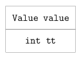

object
lua 是一种动态类型语言，类型不存在于变量中，而存在于值本身。
语言中定义了 8 种类型的值
- nil
- bool
- number
- string
- table
- function
- userdata
- thread
虽然章节名称为 object，和源代码的名称相同。 但是通常都翻译为“对象”，容易与 OOP 中的对象概念混杂在一起。 在本章，更乐意将其译为“值”。
从某种角度而言，程序就是“数据”与“操作数据的方法”。 所以第一步，先来了解 lua 中的值。
1 TODO review struct & union
- struct memory
- union memory
- how TString alignment? where dummy is smaller than tsv
- struct in union, gcobject hack
- union in array? 如何对齐
2 tagged value
章节开始就提到，类型存在于值本身。 在 lua 内部，用 TValue（tagged value）结构表示值的概念。
67: /* 68: ** Tagged Values 69: */ 70: 71: #define TValuefields Value value; int tt 72: 73: typedef struct lua_TValue { 74: TValuefields; 75: } TValue;
tt 表示值的类型，value 表示值的数据。 明显地，类型是值的一部分。

2.1 type
在 TValue 中，类型 tt 用 int 来标识，可以在代码中看到所有基础类型的宏定义
/* ** basic types */ #define LUA_TNONE (-1) #define LUA_TNIL 0 #define LUA_TBOOLEAN 1 #define LUA_TLIGHTUSERDATA 2 #define LUA_TNUMBER 3 #define LUA_TSTRING 4 #define LUA_TTABLE 5 #define LUA_TFUNCTION 6 #define LUA_TUSERDATA 7 #define LUA_TTHREAD 8
完全对应 lua 中的 8 种类型。
同时定义了相应的宏，方便类型的检测。
78: /* Macros to test type */ 79: #define ttisnil(o) (ttype(o) == LUA_TNIL) 80: #define ttisnumber(o) (ttype(o) == LUA_TNUMBER) 81: #define ttisstring(o) (ttype(o) == LUA_TSTRING) 82: #define ttistable(o) (ttype(o) == LUA_TTABLE) 83: #define ttisfunction(o) (ttype(o) == LUA_TFUNCTION) 84: #define ttisboolean(o) (ttype(o) == LUA_TBOOLEAN) 85: #define ttisuserdata(o) (ttype(o) == LUA_TUSERDATA) 86: #define ttisthread(o) (ttype(o) == LUA_TTHREAD) 87: #define ttislightuserdata(o) (ttype(o) == LUA_TLIGHTUSERDATA) 88: 89: /* Macros to access values */ 90: #define ttype(o) ((o)->tt)
细心如你，一定发现莫名多出一种 lightuserdata 类型。 这是由 userdata 类型细分出来的一种类型定义，目前先不做细致的解释， 之后到相应章节再具体分析。
2.2 value
数据部分，TValue 用一个 union 结构来表示，有效利用内存空间。
/* ** Union of all Lua values */ typedef union { GCObject *gc; void *p; lua_Number n; int b; } Value;
不同类型的数据使用不同的键值来存取。

2.3 detail
2.3.1 nil
nil 是最简单的值，表示没有值。由于不需要数据，只需用 tt 表示类型即可。
#define luaO_nilobject (&luaO_nilobject_) LUAI_DATA const TValue luaO_nilobject_;
const TValue luaO_nilobject_ = {{NULL}, LUA_TNIL};
重要的是，nil 是一个单例值，所有使用 nil 的地方，都通过 luaO_nilobject 来引用。
fig.nil
2.3.2 bool
lua 中的 bool 值是 true 和 false。
在 tt 记录类型之后，用 int b = 1/0 表示 true/false。
fig.bool
2.3.3 TODO light userdata
light userdata 表示 c 和 lua 协同的时候，由 c 语言一方传入的数据。
相应的，lua 内部只负责引用，而不负责其生命周期管理，什么时候释放，lua 并不清楚，也不过问。
所以只用 void * p 引用即可
fig.light userdata
2.3.4 number
默认设定下，lua 中所有数字都用 double 来表示。
/* ** {================================================================== @@ LUA_NUMBER is the type of numbers in Lua. ** CHANGE the following definitions only if you want to build Lua ** with a number type different from double. You may also need to ** change lua_number2int & lua_number2integer. ** =================================================================== */ #define LUA_NUMBER_DOUBLE #define LUA_NUMBER double
/* type of numbers in Lua */ typedef LUA_NUMBER lua_Number;
相应地，tt 表示数字，用 luaNumber n 来存取数字内容
fig.number
2.3.5 collectable
上面的数据表示都相对简单，其余类型的数据就相对复杂一些。 但是有一点是共通的，它们都属于可 gc 的对象。
#define iscollectable(o) (ttype(o) >= LUA_TSTRING)
lua 内建了 gc 机制，其中关键的结构是 GCObject 。
其本身是 union 结构，内部键值表明了可存取其它类型的数据。
/* ** Union of all collectable objects */ union GCObject { GCheader gch; union TString ts; union Udata u; union Closure cl; struct Table h; struct Proto p; struct UpVal uv; struct lua_State th; /* thread */ };
所有这些数据都有一个共同点，它们都是 struct，且头部的字段都是 CommonHeader。
/* ** Common Header for all collectable objects (in macro form, to be ** included in other objects) */ #define CommonHeader GCObject *next; lu_byte tt; lu_byte marked /* ** Common header in struct form */ typedef struct GCheader { CommonHeader; } GCheader;
其中 tt 和 TValue 中的 tt 是相同的。
这样就可以利用内存结构的特性，引用 GCHeader gch 来读取 tt，再根据 tt 来引用不同的键值。
fig.gcobject
这一点在取数据的宏定义中可以清晰的看到
/* macros to convert a GCObject into a specific value */ #define rawgco2ts(o) check_exp((o)->gch.tt == LUA_TSTRING, &((o)->ts)) #define gco2ts(o) (&rawgco2ts(o)->tsv) #define rawgco2u(o) check_exp((o)->gch.tt == LUA_TUSERDATA, &((o)->u)) #define gco2u(o) (&rawgco2u(o)->uv) #define gco2cl(o) check_exp((o)->gch.tt == LUA_TFUNCTION, &((o)->cl)) #define gco2h(o) check_exp((o)->gch.tt == LUA_TTABLE, &((o)->h)) #define gco2p(o) check_exp((o)->gch.tt == LUA_TPROTO, &((o)->p)) #define gco2uv(o) check_exp((o)->gch.tt == LUA_TUPVAL, &((o)->uv)) #define ngcotouv(o) \ check_exp((o) == NULL || (o)->gch.tt == LUA_TUPVAL, &((o)->uv)) #define gco2th(o) check_exp((o)->gch.tt == LUA_TTHREAD, &((o)->th))
至于剩下的类型，
- string
- table
- function
- userdata
- thread
其数据管理在后续，单独分拆为独立章节来讲解。这里先略过不表。
2.3.6 TODO internal
细心如你，一定又发现了，GCObject 中除了 gch，有 7 个键值，而不是 5 个。
事实上，在 thread 之后，新定义了 3 个类型，
- proto
- upval
- deadkey
用于内部实现使用
/* tags for values visible from Lua */ #define LAST_TAG LUA_TTHREAD #define NUM_TAGS (LAST_TAG+1) /* ** Extra tags for non-values */ #define LUA_TPROTO (LAST_TAG+1) #define LUA_TUPVAL (LAST_TAG+2) #define LUA_TDEADKEY (LAST_TAG+3)
proto 和 upval 就对应 GCObject 中多出的 2 个键值。 至于 deadkey，后续再说（现在还不清楚）。
2.4 TODO practice
根据不同类型，从 TValue 中取数据的宏
#define gcvalue(o) check_exp(iscollectable(o), (o)->value.gc) #define pvalue(o) check_exp(ttislightuserdata(o), (o)->value.p) #define nvalue(o) check_exp(ttisnumber(o), (o)->value.n) #define rawtsvalue(o) check_exp(ttisstring(o), &(o)->value.gc->ts) #define tsvalue(o) (&rawtsvalue(o)->tsv) #define rawuvalue(o) check_exp(ttisuserdata(o), &(o)->value.gc->u) #define uvalue(o) (&rawuvalue(o)->uv) #define clvalue(o) check_exp(ttisfunction(o), &(o)->value.gc->cl) #define hvalue(o) check_exp(ttistable(o), &(o)->value.gc->h) #define bvalue(o) check_exp(ttisboolean(o), (o)->value.b) #define thvalue(o) check_exp(ttisthread(o), &(o)->value.gc->th)